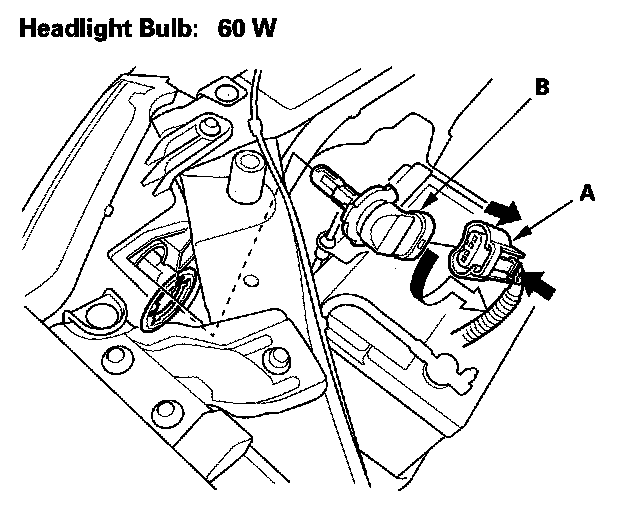
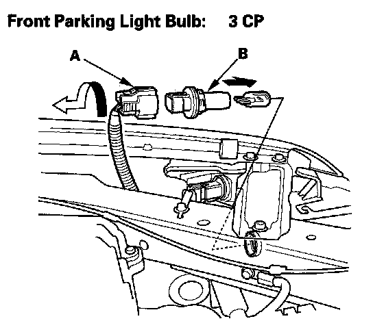
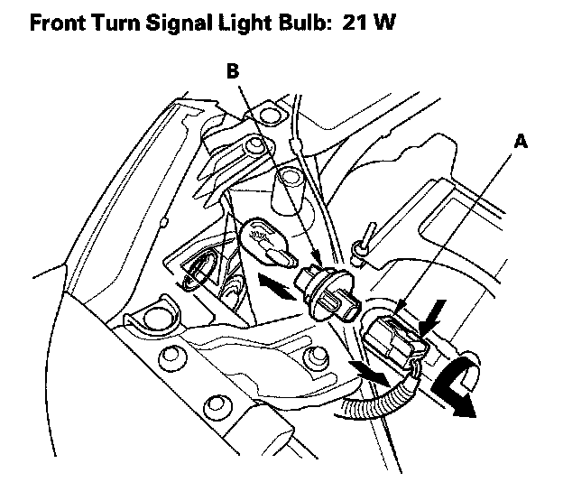
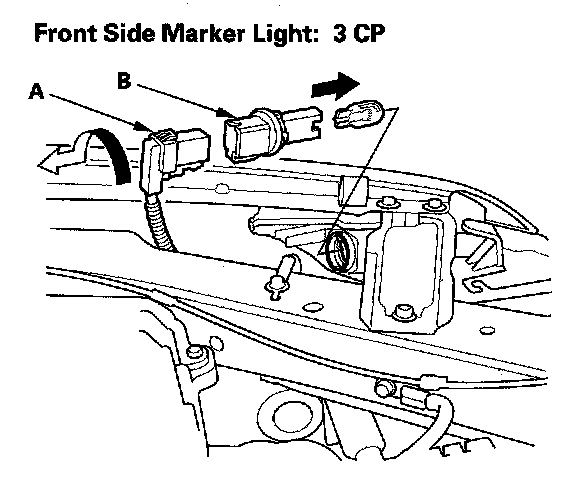

Headlight Bulb Replacement
Bulb ReplacementHeadlight Bulb (High Beam)
1. Remove the left or right upper fender trim.
2. For the left headlight, remove the battery cover, remove the battery hold-down by removing the two nuts, then slide the battery to access the bulb.

3. Disconnect the 2P connector (A) from the headlight bulb socket (B).
4. Turn the bulb socket 45° counterclockwise to remove it from the headlight housing.
5. Install a new bulb in the reverse order of removal. Make sure the notches in the bulb align with the tabs in the headlight.
NOTE: Do not touch the glass of the bulb with your hands. If necessary, clean the glass area with alcohol.
Front Parking Light Bulb
1. Remove the left or right upper fender trim.
2. For right parking light, remove the clip from windshield washer reservoir.

3. Disconnect the 2P connector (A) from the front parking light bulb socket (B).
4. Turn the bulb socket 45° counterclockwise to remove it from the headlight housing.
5. Install a new bulb in the reverse order of removal.
Front Turn Signal Light Bulb
1. Remove the left or right upper fender trim.
2. For the left light, remove the battery cover, remove the battery hold-down by removing the two nuts, then slide the battery to access the bulb.

3. Disconnect the 3P connector (A) from the bulb socket (B).
4. Turn the bulb socket 45° counterclockwise to remove it from the headlight housing.
5. Install a new bulb in the reverse order of removal.
Front Side Marker Light

1. Disconnect the 2P connector (A) from the front turn signal/front parking light.
2. Turn the bulb socket (B) 45° counterclockwise to remove it from the headlight housing.
3. Install a new bulb in the reverse order of removal.